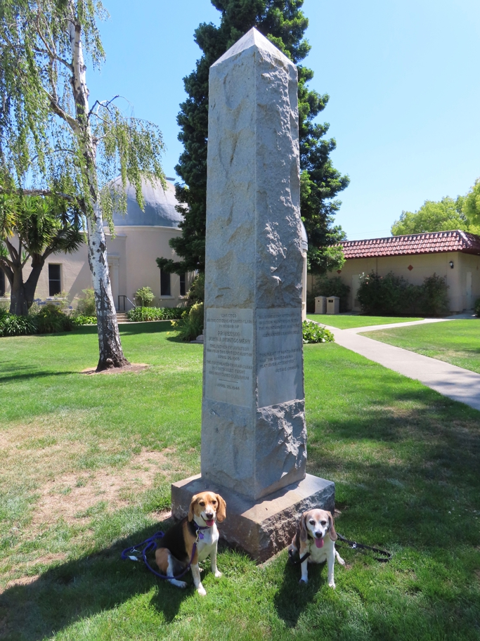

<--Previous Up

This monument commemorates John M. Montgomery's successful demonstration, on this spot, of the glider control technology which he had developed for several decades.
Halley Beagle Wallace Beagle